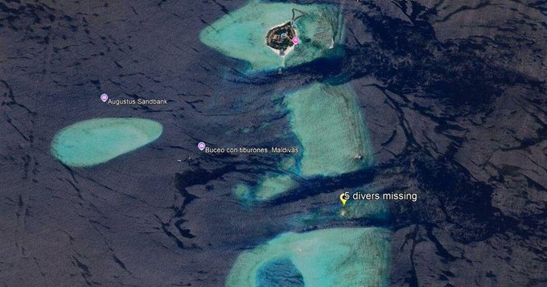

@CBSNews
📝 原文: Iran men's soccer team heading to Turkey for World Cup preparations
🇨🇳 译文: 伊朗男足前往土耳其备战世界杯

🕒 2026-05-16T22:30:01+00:00
| 来源 | 旧窗口内数量 | 本次新增 | 本次淘汰 | 当前窗口内共有 |
|---|---|---|---|---|
| 推文 + Dawn 新闻 | 0 | 29 | 0 | 29 |
| ARY News | 0 | 0 | 0 | 0 |
注：淘汰数 = 旧窗口内数量 + 本次新增 - 当前窗口内共有





暂无文章。